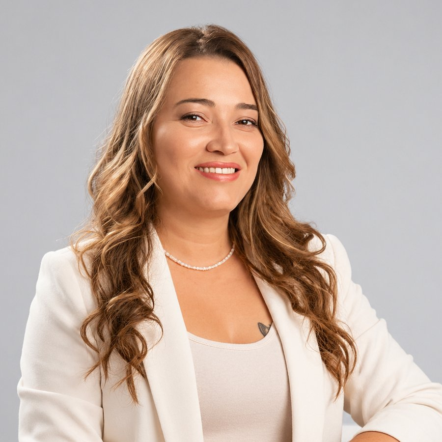

Reflexología terapéutica
Alivia tu cuerpo desde tus pies
Acompañamiento terapéutico para dolores crónicos, tensión muscular, estrés e insomnio. Presión precisa en los puntos reflejos, en un espacio tranquilo y a tu ritmo.
Con Alexandra Garzón, reflexóloga en Medellín.

20%en tu primera sesión si me conociste en la inauguración de Cygnus
Terapia complementaria a tu tratamiento
Plan de sesiones según tu caso
Atención en Medellín